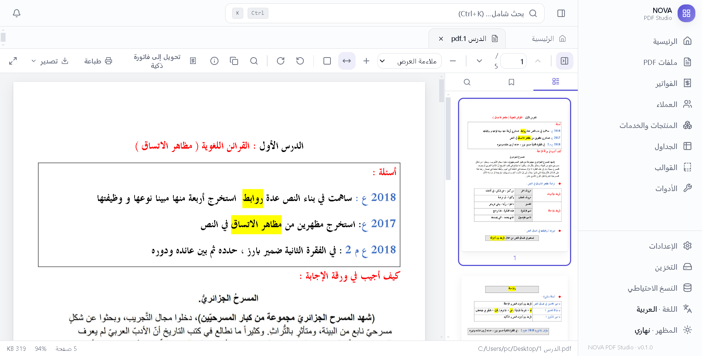
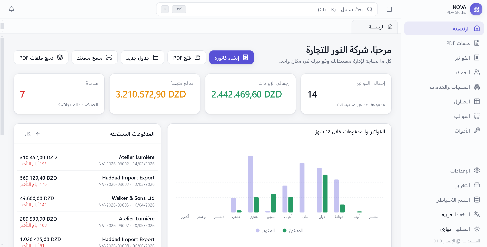
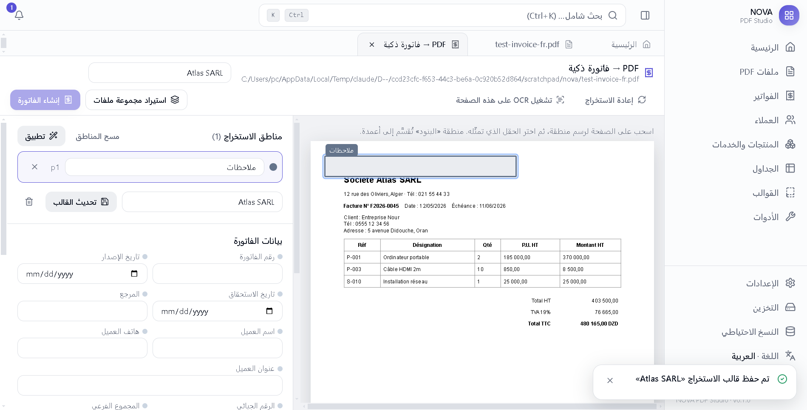
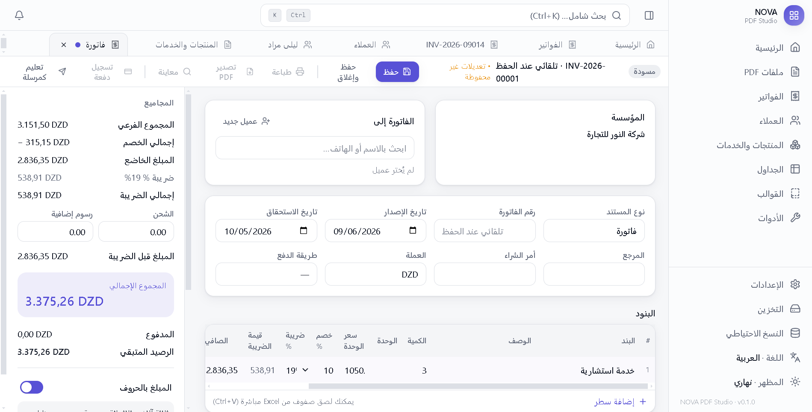
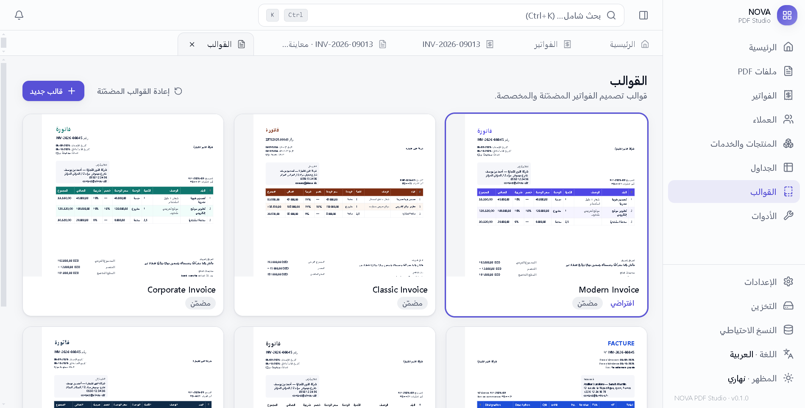
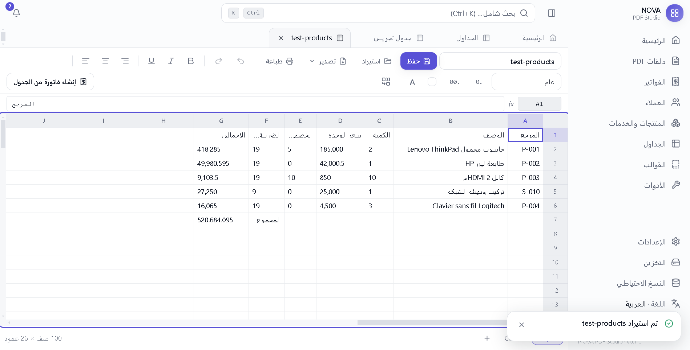
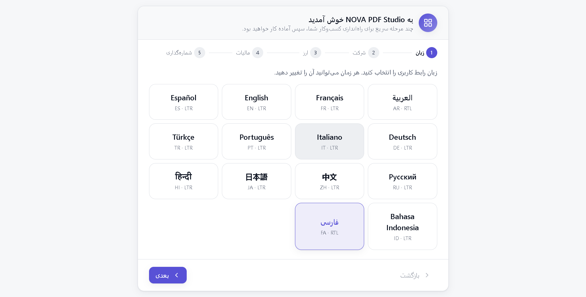
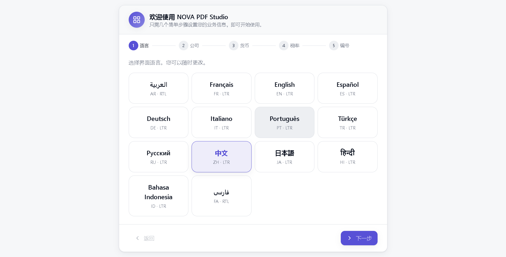

📄
PDF viewer & editor
Fast lazy-loaded viewer, search with highlights, click any text to edit it in place, annotations, signature and stamp, merge, split, rotate, compress, watermark, page numbers.
Nova PDF is a premium desktop studio: PDF editor with offline OCR, an invoice maker with integer-safe math and elegant templates, PDF-to-invoice conversion, and an Excel-like spreadsheet. No account. No internet required.

Open a PDF, make it searchable, turn it into an invoice, paste products from Excel, print it in Arabic that renders correctly. Each part was built for the other.

Fast lazy-loaded viewer, search with highlights, click any text to edit it in place, annotations, signature and stamp, merge, split, rotate, compress, watermark, page numbers.

Recognises Arabic, French and English on scanned documents without sending anything online. Text becomes searchable and copyable, and exports as a searchable PDF.

Customers, products, taxes, multi-currency, partial payments and overdue tracking. Money math uses integers only, so totals are always exact. Amount in words included.

Six designed templates plus a drag-and-drop designer, QR codes, logo, signature and stamp. Printed through Chromium so Arabic shaping and RTL are always correct.
Automatic field detection on old invoices, drawable extraction zones, reusable extraction templates recognised by keywords, and batch import as drafts.

Formulas like SUM, AVERAGE, IF and ROUND, XLSX and CSV import/export, paste from Excel, and one click to create an invoice from a sheet.
Every screen, dialog and message is translated. Arabic and Persian flip the entire layout to RTL without a restart.


Nova PDF stores everything in a local SQLite database with atomic writes. There is no cloud, no telemetry and no login.
Yes. Nova PDF is free and open-source under the MIT license. You can use it for personal and commercial work.
The installer is not code-signed yet, which is why SmartScreen warns. Click “More info” then “Run anyway”. You can verify the file against the checksum published on the GitHub release.
In your Windows user profile, inside “AppData\Roaming\NOVA PDF Studio\data”. Backups are created there automatically and you can export the database from Settings.
The app checks GitHub Releases in the background, downloads new versions quietly and installs them the next time you close it. No action needed.
Windows 10/11 today. macOS is planned next; a companion mobile app for scanning and quick invoices is being considered.
Download the installer, choose your language in the setup wizard, register your company, and start with your first PDF or invoice.
Download for Windows